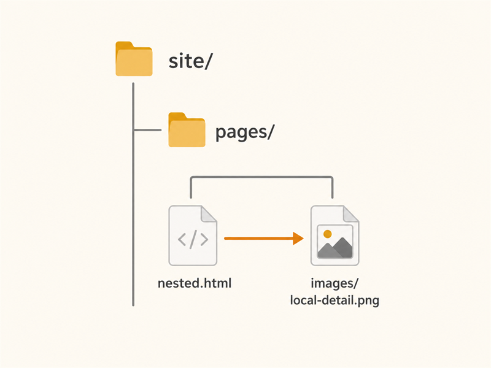

Nested page
This file lives in site/pages. We can build whatever structure we want!
This, of course, includes images.

This file lives in site/pages. We can build whatever structure we want!
This, of course, includes images.
